import re
import random
from pathlib import Path
import matplotlib.pyplot as plt
import matplotlib.dates as mdates
import numpy as np
import pandas as pd
from sklearn.linear_model import LinearRegression
from sklearn.metrics import mean_squared_error
from sklearn.preprocessing import LabelEncoder
from sklearn.model_selection import train_test_split
from sklearn.feature_extraction.text import CountVectorizer
import keras
from keras.models import Sequential
from keras.layers import (Dense, Input, Rescaling, Reshape,
SimpleRNN, GRU, LSTM, Bidirectional, Embedding)
from keras.callbacks import EarlyStoppingTime Series & Recurrent Neural Networks
ACTL3143 & ACTL5111 Deep Learning for Actuaries
Introduction
A lecture on sequence modelling
This is really a lecture about sequences — ordered data where the order itself carries meaning.
- Time series: stock prices, claim counts, mortality rates, temperatures.
- Text: a sentence is a sequence of words; a document a sequence of sentences.
The common thread: to predict the next element we must use what came before.
Time series data
Tabular data vs time series data
Tabular data
We have a dataset \{ \boldsymbol{x}_i, y_i \}_{i=1}^n which we assume are i.i.d. observations.
| Brand | Mileage | # Claims |
|---|---|---|
| BMW | 101 km | 1 |
| Audi | 432 km | 0 |
| Volvo | 3 km | 5 |
| \vdots | \vdots | \vdots |
The goal is to predict the y for some covariates \boldsymbol{x}.
Time series data
Have a sequence \{ \boldsymbol{x}_t, y_t \}_{t=1}^T of observations taken at regular time intervals.
| Date | Humidity | Temp. |
|---|---|---|
| Jan 1 | 60% | 20 °C |
| Jan 2 | 65% | 22 °C |
| Jan 3 | 70% | 21 °C |
| \vdots | \vdots | \vdots |
The task is to forecast future values based on the past.
Attributes of time series data
- Temporal ordering: The order of the observations matters.
- Trend: The general direction of the data.
- Noise: Random fluctuations in the data.
- Seasonality: Patterns that repeat at regular intervals.
NoteQuestion
What will be the temperature in Berlin tomorrow? What information would you use to make a prediction?
The forecasting problem
We stand at a reference time t: we have seen the series up to now, and want the next h values.
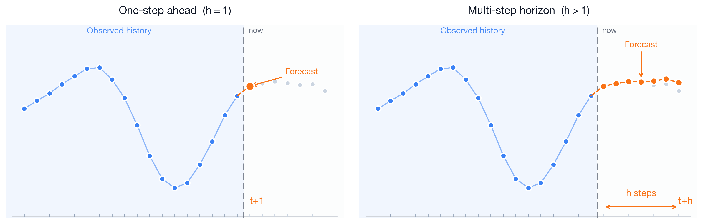
Three kinds of forecasting models
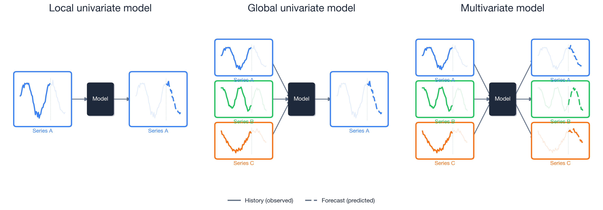
For local models, you would have a separate model for each time series. Global models allow for cross-learning, and are more promising for deep forecasting techniques.
Time series for actuaries
Applications:
- Claims reserving — project future claim payments given a notified claim.
- Mortality forecasting — extrapolate mortality rates from life tables, e.g., Richman & Wuthrich (2019).
- Economic scenario generation — simulate interest rates, inflation, and asset returns.
Neural networks or traditional models:
- Traditional models (ARIMA, Lee–Carter) can be hard to beat on a single, short, well-structured series — decades of refinement, few parameters, robust.
- Neural networks work best with global cross-learning, and rich covariates.
Think about the fundamental predictability of the data:
- Share prices are close to a random walk, hopeless to predict.
- Weather is often genuinely predictable, especially in the short-term.
Australian financial stocks
Imports needed for these demos
Downloading the data
The yfinance package can download daily price histories from Yahoo Finance. We grab several ASX-listed financials plus the ASX200 index.
# pip install yfinance
import yfinance as yf
from datetime import date
# Yahoo uses ".AX" for ASX stocks and "^AXJO" for the S&P/ASX 200 index
tickers = {
"ANZ": "ANZ.AX", "BOQ": "BOQ.AX", "CBA": "CBA.AX", "NAB": "NAB.AX",
"QBE": "QBE.AX", "SUN": "SUN.AX", "WBC": "WBC.AX", "ASX200": "^AXJO",
}
raw = yf.download(list(tickers.values()),
start="1999-01-01", end=date.today().isoformat(), progress=False)
data = raw["Close"].rename(columns={v: k for k, v in tickers.items()})
# Make 'Date' an explicit column instead of the index
data = data.rename_axis("Date").reset_index()
data.to_csv("data/interim/aus_fin_stocks.csv", index=False)Australian financial stocks
stocks = pd.read_csv("data/interim/aus_fin_stocks.csv")
stocks| Date | ANZ | ASX200 | BOQ | CBA | NAB | QBE | SUN | WBC | |
|---|---|---|---|---|---|---|---|---|---|
| 0 | 1999-01-01 | 2.327790 | NaN | NaN | 5.823670 | NaN | NaN | 1.894796 | NaN |
| 1 | 1999-01-04 | 2.345227 | 2732.199951 | NaN | 5.760781 | 5.195878 | 2.277954 | 1.894796 | 2.517086 |
| 2 | 1999-01-05 | 2.338688 | 2716.600098 | NaN | 5.763297 | 5.265624 | 2.205534 | 1.894796 | 2.562639 |
| ... | ... | ... | ... | ... | ... | ... | ... | ... | ... |
| 6990 | 2026-06-17 | 35.049999 | 8966.299805 | 6.37 | 163.710007 | 37.669998 | 23.570000 | 18.629999 | 35.560001 |
| 6991 | 2026-06-18 | 35.139999 | 8911.099609 | 6.30 | 162.229996 | 37.340000 | 24.010000 | 18.670000 | 35.160000 |
| 6992 | 2026-06-19 | 35.029999 | 8828.700195 | 6.32 | 162.399994 | 37.740002 | 24.059999 | 18.620001 | 35.009998 |
6993 rows × 9 columns
Plot
stocks.plot()
NoteQuestion
What is wrong with this plot?
Answer: The main issues are
- x-axis is unclear: should show the date, not the observation number
- The ASX200 index has much larger values than the individual stocks; it should be plotted separately.
- The legend shouldn’t be overlapping and hiding half of the plot.
Data types and NA values
stocks.info()<class 'pandas.DataFrame'>
RangeIndex: 6993 entries, 0 to 6992
Data columns (total 9 columns):
# Column Non-Null Count Dtype
--- ------ -------------- -----
0 Date 6993 non-null str
1 ANZ 6993 non-null float64
2 ASX200 6939 non-null float64
3 BOQ 6847 non-null float64
4 CBA 6993 non-null float64
5 NAB 6992 non-null float64
6 QBE 6992 non-null float64
7 SUN 6993 non-null float64
8 WBC 6992 non-null float64
dtypes: float64(8), str(1)
memory usage: 560.1 KBfor col in stocks.columns:
print(f"{col}: {stocks[col].isna().sum()}")Date: 0
ANZ: 0
ASX200: 54
BOQ: 146
CBA: 0
NAB: 1
QBE: 1
SUN: 0
WBC: 1asx200 = stocks.pop("ASX200")Set the index to the date
stocks["Date"] = pd.to_datetime(stocks["Date"])
stocks = stocks.set_index("Date")
stocks| ANZ | BOQ | CBA | NAB | QBE | SUN | WBC | |
|---|---|---|---|---|---|---|---|
| Date | |||||||
| 1999-01-01 | 2.327790 | NaN | 5.823670 | NaN | NaN | 1.894796 | NaN |
| 1999-01-04 | 2.345227 | NaN | 5.760781 | 5.195878 | 2.277954 | 1.894796 | 2.517086 |
| 1999-01-05 | 2.338688 | NaN | 5.763297 | 5.265624 | 2.205534 | 1.894796 | 2.562639 |
| ... | ... | ... | ... | ... | ... | ... | ... |
| 2026-06-17 | 35.049999 | 6.37 | 163.710007 | 37.669998 | 23.570000 | 18.629999 | 35.560001 |
| 2026-06-18 | 35.139999 | 6.30 | 162.229996 | 37.340000 | 24.010000 | 18.670000 | 35.160000 |
| 2026-06-19 | 35.029999 | 6.32 | 162.399994 | 37.740002 | 24.059999 | 18.620001 | 35.009998 |
6993 rows × 7 columns
By setting the index to the date (and converting the date to a proper date format rather than a string), the plot of the stocks can be updated accordingly very easily.
Plot II
stocks.plot() # This plot can still be improved.. why?
plt.ylabel("Stock Price ($)")
plt.legend(loc="upper center", bbox_to_anchor=(0.5, -0.4), ncol=4);
Can index using dates I
We can filter our data nicely using the dates that are now indexed.
stocks.loc["2010-1-4":"2010-01-8"]| ANZ | BOQ | CBA | NAB | QBE | SUN | WBC | |
|---|---|---|---|---|---|---|---|
| Date | |||||||
| 2010-01-04 | 9.092883 | 4.196682 | 24.627254 | 9.934697 | 13.140049 | 4.317703 | 9.993726 |
| 2010-01-05 | 9.136576 | 4.250533 | 24.999773 | 10.061602 | 13.207809 | 4.382517 | 10.076675 |
| 2010-01-06 | 9.001514 | 4.228993 | 25.125454 | 9.865807 | 13.004534 | 4.287787 | 10.029274 |
| 2010-01-07 | 8.787006 | 4.099753 | 24.883083 | 9.786038 | 12.769980 | 4.347618 | 9.894972 |
| 2010-01-08 | 8.838641 | 4.200274 | 25.206242 | 9.753405 | 12.910715 | 4.372547 | 9.934475 |
Note, these ranges are inclusive, not like Python’s normal slicing.
Can index using dates II
So to get 2019’s December and all of 2020 for CBA:
stocks.loc["2019-12":"2020", ["CBA"]]| CBA | |
|---|---|
| Date | |
| 2019-12-02 | 64.326653 |
| 2019-12-03 | 62.675636 |
| 2019-12-04 | 61.467003 |
| ... | ... |
| 2020-12-29 | 68.825630 |
| 2020-12-30 | 68.481514 |
| 2020-12-31 | 67.269035 |
275 rows × 1 columns
Can look at the first differences
Rather than looking directly at the time series, we can remove the effect of the trend by looking at first differences.
stocks.diff().plot()
plt.ylabel("Daily Price Changes ($)")
plt.legend(loc="upper center", bbox_to_anchor=(0.5, -0.4), ncol=4);
The variance of the first differences increases over time (heteroscedasticity). This is a natural occurrence when the stock price increases over time.
Can look at the percentage changes
We can normalise the differences by taking the percentage changes.
stocks.pct_change().plot()
plt.ylabel("Daily Returns (%)")
plt.legend(loc="upper center", bbox_to_anchor=(0.5, -0.4), ncol=4);
Focus on one stock
stock = stocks[["CBA"]].copy()
stock| CBA | |
|---|---|
| Date | |
| 1999-01-01 | 5.823670 |
| 1999-01-04 | 5.760781 |
| 1999-01-05 | 5.763297 |
| ... | ... |
| 2026-06-17 | 163.710007 |
| 2026-06-18 | 162.229996 |
| 2026-06-19 | 162.399994 |
6993 rows × 1 columns
stock.plot()
plt.ylabel("Stock Price ($)");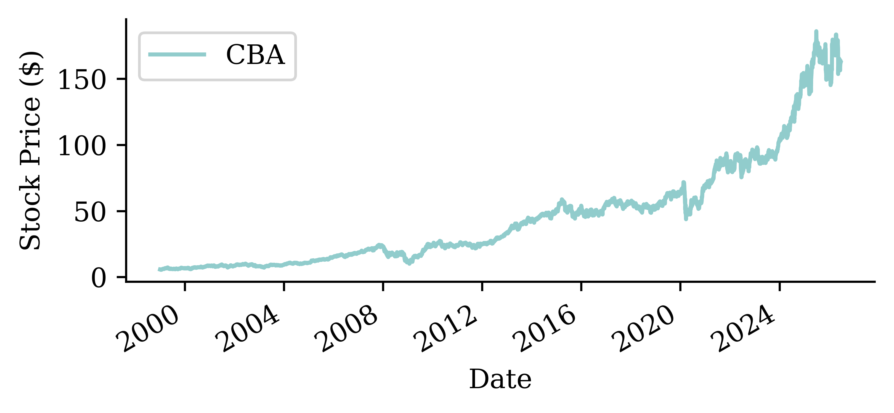
stock.isna().sum()CBA 0
dtype: int64Fill in the missing values
Some of the data has missing values. Here, we fill in the missing values by taking the value from the previous day. If the previous day also has a missing value, then you do the same thing until all values are filled. This is called forward-filling.
asx200 = pd.DataFrame(asx200).set_index(stocks.index)
missing_day = asx200.index[asx200["ASX200"].isna()][1]
prev_day = missing_day - pd.Timedelta(days=1)
after = missing_day + pd.Timedelta(days=3)asx200.loc[prev_day:after]| ASX200 | |
|---|---|
| Date | |
| 1999-01-25 | 2713.100098 |
| 1999-01-26 | NaN |
| 1999-01-27 | 2738.800049 |
| 1999-01-28 | 2765.100098 |
| 1999-01-29 | 2781.699951 |
asx200 = asx200.ffill()
asx200.loc[prev_day:after]| ASX200 | |
|---|---|
| Date | |
| 1999-01-25 | 2713.100098 |
| 1999-01-26 | 2713.100098 |
| 1999-01-27 | 2738.800049 |
| 1999-01-28 | 2765.100098 |
| 1999-01-29 | 2781.699951 |
stock = stock.ffill()Convert to log returns
Instead of working with raw prices, we’ll work with daily log returns:
# Calculate log returns
stock_log = np.log(stock / stock.shift(1)).dropna()
stock_log.head()| CBA | |
|---|---|
| Date | |
| 1999-01-04 | -0.010858 |
| 1999-01-05 | 0.000437 |
| 1999-01-06 | 0.008043 |
| 1999-01-07 | 0.025859 |
| 1999-01-08 | -0.021322 |
Code
stock_log.plot()
plt.ylabel("Daily Log Return")
plt.title("CBA Daily Log Returns");
Code
# Distribution of log returns
returns = stock_log["CBA"]
plt.hist(returns, bins=100, alpha=0.7)
plt.xlabel("Daily Log Return")
plt.ylabel("Frequency")
plt.title("Distribution of CBA daily log returns");
Splitting in time
We never shuffle a time series: train on the oldest data, validate on the middle, and keep the most recent years to test on. The cutoffs live in one place — change these lines to re-split.
# Train through *_train_end, validate through *_val_end, test after.
cba_train_end, cba_val_end = "2014", "2020" # ~60/20/20 (finance data ends 2026)
cba_val_start, cba_test_start = str(int(cba_train_end) + 1), str(int(cba_val_end) + 1)Code
import matplotlib.dates as mdates
fig, ax = plt.subplots(figsize=(6, 2.6))
for label, lo, hi in [("Train", None, cba_train_end), ("Val", cba_val_start, cba_val_end), ("Test", cba_test_start, None)]:
ax.plot(stock["CBA"].loc[lo:hi].index, stock["CBA"].loc[lo:hi], label=label)
ax.set_ylabel("CBA price ($)")
ax.xaxis.set_major_locator(mdates.YearLocator(5))
ax.xaxis.set_major_formatter(mdates.DateFormatter("%Y"))
ax.legend(loc="upper left", fontsize=7);
Sydney weather
Sydney Airport weather
The Bureau of Meteorology records daily weather at Sydney Airport (station 066037).
TMAX = "Maximum temperature in 24 hours after 9am (local time) in Degrees C"
weather = pd.read_csv("data/raw/BoM/DC02D_Data_066037_9999999910249598.csv", low_memory=False)
weather| dc | Station Number | Year | Month | Day | Precipitation in the 24 hours before 9am (local time) in mm | Quality of precipitation value | Number of days of rain within the days of accumulation | Accumulated number of days over which the precipitation was measured | Precipitation since last observation at 00 hours Local Time in mm | ... | Total cloud amount at 09 hours in eighths | Quality of total cloud amount at 09 hours Local Time | Total cloud amount at 12 hours in eighths | Quality of total cloud amount at 12 hours Local Time | Total cloud amount at 15 hours in eighths | Quality of total cloud amount at 15 hours Local Time | Total cloud amount at 18 hours in eighths | Quality of total cloud amount at 18 hours Local Time | Total cloud amount at 21 hours in eighths | Quality of total cloud amount at 21 hours Local Time | |
|---|---|---|---|---|---|---|---|---|---|---|---|---|---|---|---|---|---|---|---|---|---|
| 0 | dc | 66037 | 1991 | 1 | 1 | 0.0 | Y | ... | 7 | Y | 7 | Y | 7 | Y | 7 | Y | 5 | Y | |||
| 1 | dc | 66037 | 1991 | 1 | 2 | 0.2 | Y | 1 | 1 | ... | 5 | Y | 2 | Y | 5 | Y | 5 | Y | 1 | Y | |
| 2 | dc | 66037 | 1991 | 1 | 3 | 0.0 | Y | ... | 2 | Y | 1 | Y | 1 | Y | 1 | Y | 0 | Y | |||
| ... | ... | ... | ... | ... | ... | ... | ... | ... | ... | ... | ... | ... | ... | ... | ... | ... | ... | ... | ... | ... | ... |
| 11655 | dc | 66037 | 2022 | 11 | 29 | 0.2 | N | 1 | 0.0 | ... | 1 | N | 1 | N | 1 | N | 3 | N | 7 | N | |
| 11656 | dc | 66037 | 2022 | 11 | 30 | 0.2 | N | 1 | 0.0 | ... | 7 | N | 7 | N | 7 | N | 1 | N | 7 | N | |
| 11657 | dc | 66037 | 2022 | 12 | 1 | 0.2 | N | 1 | 0.0 | ... | 7 | N | 7 | N |
11658 rows × 120 columns
The maximum temperature series
We forecast the daily maximum temperature. First build a proper date index.
weather["Date"] = pd.to_datetime(weather[["Year", "Month", "Day"]])
temps = weather.set_index("Date")[[TMAX]].rename(columns={TMAX: "Temp"})
temps["Temp"] = pd.to_numeric(temps["Temp"], errors="coerce")
temps| Temp | |
|---|---|
| Date | |
| 1991-01-01 | 28.0 |
| 1991-01-02 | 29.5 |
| 1991-01-03 | 31.2 |
| ... | ... |
| 2022-11-29 | 24.0 |
| 2022-11-30 | 21.8 |
| 2022-12-01 | NaN |
11658 rows × 1 columns
Plot
temps.plot()
plt.ylabel("Max temperature (°C)");
Unlike stock prices, temperature has a strong, regular yearly seasonality — hot summers and cool winters repeat every year. That is genuine structure a model can learn.
Data types and NA values
temps.info()<class 'pandas.DataFrame'>
DatetimeIndex: 11658 entries, 1991-01-01 to 2022-12-01
Data columns (total 1 columns):
# Column Non-Null Count Dtype
--- ------ -------------- -----
0 Temp 11657 non-null float64
dtypes: float64(1)
memory usage: 182.2 KBtemps.isna().sum()Temp 1
dtype: int64temps = temps.dropna()Zooming into one summer
temps.loc["2019-12":"2020-02"].plot()
plt.ylabel("Max temperature (°C)");
Splitting in time
temp_train_end, temp_val_end = "2009", "2015" # ~60/20/20 (weather data ends 2022)
temp_val_start, temp_test_start = str(int(temp_train_end) + 1), str(int(temp_val_end) + 1)Code
import matplotlib.dates as mdates
fig, ax = plt.subplots(figsize=(6, 2.6))
for label, lo, hi in [("Train", None, temp_train_end), ("Val", temp_val_start, temp_val_end), ("Test", temp_test_start, None)]:
ax.plot(temps["Temp"].loc[lo:hi].index, temps["Temp"].loc[lo:hi], label=label)
ax.set_ylabel("Max temp (°C)")
ax.xaxis.set_major_locator(mdates.YearLocator(5))
ax.xaxis.set_major_formatter(mdates.DateFormatter("%Y"))
ax.legend(loc="upper left", fontsize=7);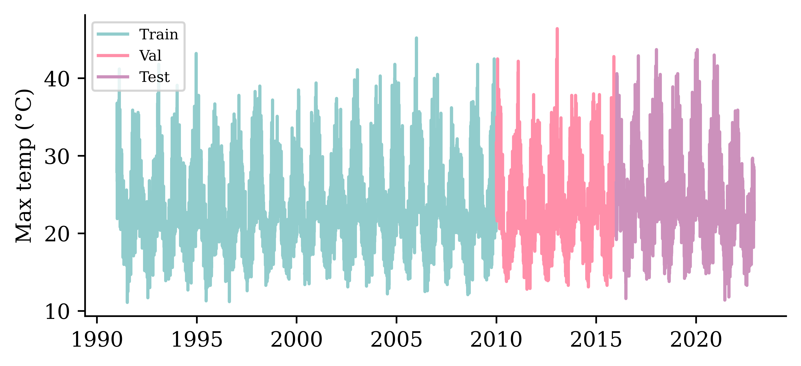
Naive baseline forecasts
Before any neural network we set up baselines that need no training; a model only earns its keep if it beats them. The simplest assume nothing changes; for each series we also build one smarter, structural forecast — a trend for the share price and a seasonal average for the temperature.
Three naive forecasting ideas
The simplest forecast assumes nothing changes — but that has two readings, differing in how far ahead they look and where they re-anchor:
- Persistence (one-step): tomorrow equals today, \hat{y}_t = y_{t-1}, re-anchored to the true latest value every day. The yardstick for one-step models.
- Constant (multi-step): the entire future is held constant at the last value we saw, \hat{y}_{t+h} = y_t for all h — anchored once at the forecast origin, giving a flat line. The yardstick for multi-step models.
Both are the same random-walk idea (also called last observation carried forward): they agree on the first step and only diverge after it.
The last basic forecast is to just extrapolate the trend seen in the training data.
Helper functions
def log_to_price(log_returns, initial_price):
"""Convert log returns to raw prices given an initial price."""
# Use cumulative sum of log returns for numerical stability
# P_t = P_0 * exp(sum of log returns from 1 to t)
cumulative_log_returns = log_returns.cumsum()
prices = initial_price * np.exp(cumulative_log_returns)
return prices
def get_last_price(stock_df, cutoff_date):
"""Get the last known price before the forecast period starts."""
last_known_date = stock_df.loc[:cutoff_date].index[-1]
return stock_df.loc[last_known_date, "CBA"]Constant forecast
The whole validation period is held constant at the last price we saw just before it. This is the multi-step naïve forecast (zero log returns from the origin onward).
last_price = get_last_price(stock, cutoff_date=f"{cba_train_end}-12")
constant_log = pd.Series(0.0, index=stock_log.loc[cba_val_start:cba_val_end].index)
constant_prices = log_to_price(constant_log, last_price)Code
start = f"{cba_train_end}-12"
end = cba_val_end
stock.loc[start:end, ["CBA"]].plot(label="CBA")
constant_prices.plot(label="Constant")
plt.axvline(f"{cba_val_start}-01", color="black", linestyle="--")
plt.ylabel("Stock Price ($)")
plt.legend()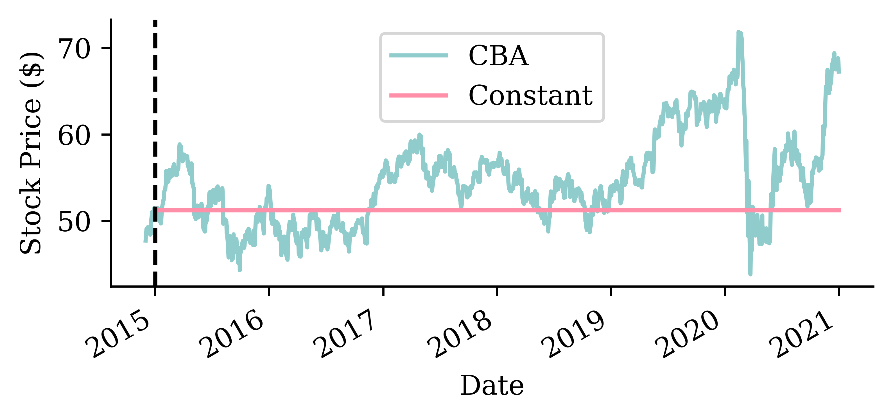
Extrapolate the trend
train_log_returns = stock_log.loc[:cba_train_end] # estimate the trend on training data only
trend_log = train_log_returns.mean().values[0]
print(f"Average daily log return: {trend_log:.6f}")Average daily log return: 0.000532Code
# Plot the mean daily log return over the training-period returns
train_log_returns.plot()
plt.axhline(trend_log, color=COLOURS[1], linestyle="--", label="Trend (mean log return)")
plt.ylabel("Daily Log Return");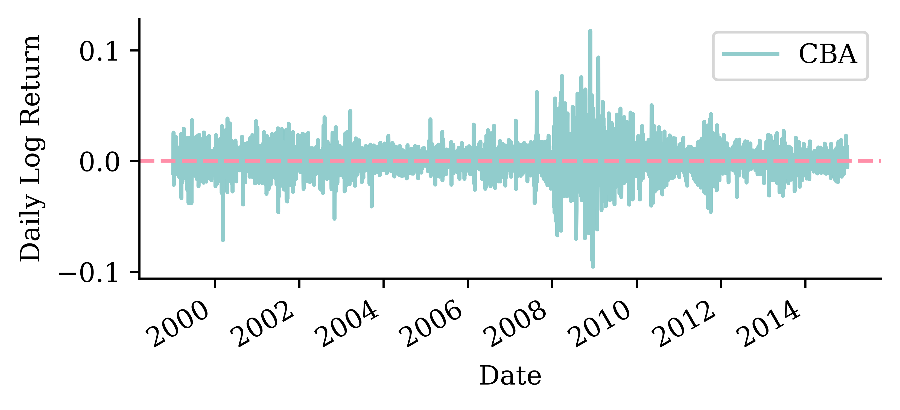
Trend fitted
# Create trend forecast over the training period to show the fitted trend
train_trend_log = pd.Series(trend_log, index=train_log_returns.index)
trend_start_price = get_last_price(stock, cutoff_date=train_log_returns.index[0].strftime('%Y-%m-%d'))
train_trend_prices = log_to_price(train_trend_log, trend_start_price)Code
stock.loc[train_log_returns.index, ["CBA"]].plot(label="CBA")
train_trend_prices.plot(label="Trend")
plt.axvline(train_log_returns.index[0], color="gray", linestyle=":", linewidth=1)
plt.axvline(train_log_returns.index[-1], color="gray", linestyle=":", linewidth=1)
plt.ylabel("Stock Price ($)")
plt.legend();
Trend forecasts
Code
stock.loc[start:end, ["CBA"]].plot(label="CBA")
constant_prices.loc[start:end].plot(label="Constant")
trend_prices.loc[start:end].plot(label="Trend")
plt.axvline(f"{cba_val_start}-01", color="black", linestyle="--")
plt.ylabel("Stock Price ($)")
plt.legend(ncol=3, loc="upper center", bbox_to_anchor=(0.5, 1.3));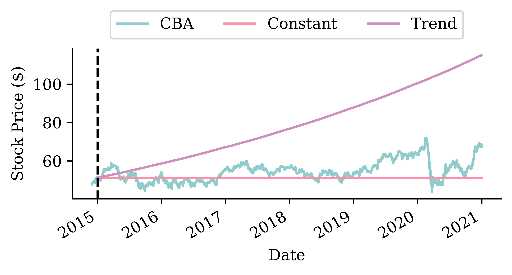
Which is better?
If we look at the root mean squared error (RMSE) of the two models:
# Calculate RMSE using the actual forecasts we computed
actual_prices = stock.loc[cba_val_start:cba_val_end, "CBA"]
constant_rmse = mean_squared_error(actual_prices, constant_prices) ** 0.5
trend_rmse = mean_squared_error(actual_prices, trend_prices) ** 0.5
constant_rmse, trend_rmse(6.190991093515316, 29.04712662478564)
TipQuestion
Why report RMSE rather than MSE?
Answer: MSE squares the differences, so its units are squared dollars — hard to interpret. Taking the square root (RMSE) brings the units back to dollars, directly comparable to the share price.
Persistence forecast (one-step)
Now two baselines for the temperature series. First, persistence: predict tomorrow’s maximum temperature to be the same as today’s, \hat{y}_t = y_{t-1}.
persistence = temps["Temp"].shift(1)Code
ax = temps.loc[f"{temp_test_start}-01":f"{temp_test_start}-03", "Temp"].plot(label="Actual", x_compat=True)
persistence.loc[f"{temp_test_start}-01":f"{temp_test_start}-03"].plot(ax=ax, label="Persistence", x_compat=True)
ax.set_ylabel("Max temperature (°C)")
ax.xaxis.set_major_locator(mdates.MonthLocator())
ax.xaxis.set_major_formatter(mdates.DateFormatter("%b"))
ax.set_xlabel("")
ax.legend();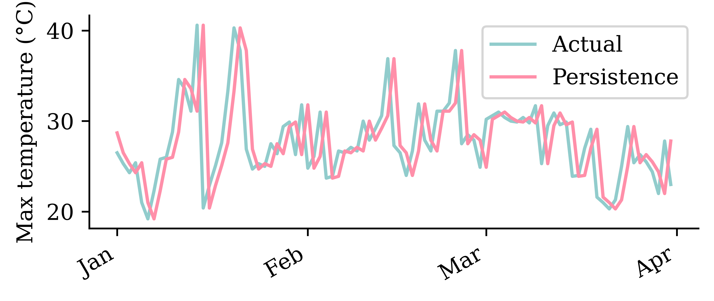
A seasonal baseline
A smarter baseline uses the seasonality: predict each day’s historical average over all years in the training period.
train_temps = temps.loc[:temp_train_end, "Temp"]
seasonal_average = train_temps.groupby(train_temps.index.dayofyear).mean()
seasonal = pd.Series(temps.index.dayofyear, index=temps.index).map(seasonal_average)Code
seasonal_average.plot()
plt.xlabel("Day of year")
plt.ylabel("Average max temp (°C)");
Seasonal forecast
Code
ax = temps.loc[temp_test_start, "Temp"].plot(label="Actual", x_compat=True)
seasonal.loc[temp_test_start].plot(ax=ax, label="Seasonal", x_compat=True)
ax.set_ylabel("Max temperature (°C)")
ax.xaxis.set_major_locator(mdates.MonthLocator())
ax.xaxis.set_major_formatter(mdates.DateFormatter("%b"))
ax.set_xlabel("")
ax.legend();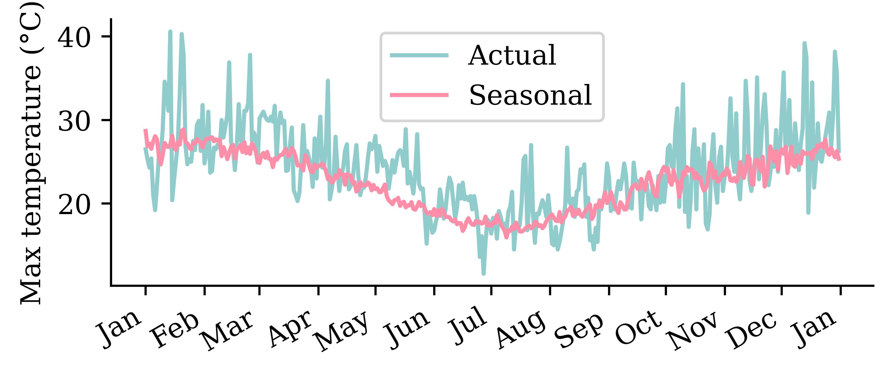
The seasonal average captures the annual cycle but misses the day-to-day weather. Persistence does the opposite. A good model should combine both.
Which is better?
We compare the forecasts over the validation years using the root mean squared error (RMSE), in °C.
actual_val = temps["Temp"].loc[temp_val_start:temp_val_end]
persistence_rmse_val = mean_squared_error(actual_val, persistence.loc[temp_val_start:temp_val_end]) ** 0.5
seasonal_rmse_val = mean_squared_error(actual_val, seasonal.loc[temp_val_start:temp_val_end]) ** 0.5
persistence_rmse_val, seasonal_rmse_val(4.069279101425016, 3.8466517052843585)The RMSE is in °C, so it is directly interpretable: a typical forecast is off by a few degrees. The seasonal baseline clearly beats persistence — there is real structure to exploit. For the share price, by contrast, persistence is already about as good as it gets.
Use the recent history
The baselines used only yesterday (persistence) or the calendar (seasonal / trend). Now we hand a model a genuine window of recent history — the last 40 values — and let it learn the mapping to the next value. This turns the series into an ordinary supervised-learning problem that any regressor can tackle, starting with a linear model and a feedforward network.
Lagged features
We turn each series into a table: the previous 40 values become the features T-40, …, T-1, and the value to predict is T.
def lagged_timeseries(df, target, window):
lagged = pd.DataFrame()
for i in range(window, 0, -1):
lagged[f"T-{i}"] = df[target].shift(i)
lagged["T"] = df[target].values
return laggedtemp_lagged = lagged_timeseries(temps, "Temp", 40)
cba_lagged = lagged_timeseries(stock_log, "CBA", 40)The temperature design matrix — each row is one 40-day window (the first rows include NaN until 40 days of history exist):
| T-40 | T-39 | T-38 | T-37 | T-36 | T-35 | T-34 | T-33 | T-32 | T-31 | ... | T-9 | T-8 | T-7 | T-6 | T-5 | T-4 | T-3 | T-2 | T-1 | T | |
|---|---|---|---|---|---|---|---|---|---|---|---|---|---|---|---|---|---|---|---|---|---|
| Date | |||||||||||||||||||||
| 1991-01-01 | NaN | NaN | NaN | NaN | NaN | NaN | NaN | NaN | NaN | NaN | ... | NaN | NaN | NaN | NaN | NaN | NaN | NaN | NaN | NaN | 28.0 |
| 1991-01-02 | NaN | NaN | NaN | NaN | NaN | NaN | NaN | NaN | NaN | NaN | ... | NaN | NaN | NaN | NaN | NaN | NaN | NaN | NaN | 28.0 | 29.5 |
| ... | ... | ... | ... | ... | ... | ... | ... | ... | ... | ... | ... | ... | ... | ... | ... | ... | ... | ... | ... | ... | ... |
| 2022-11-29 | 24.3 | 23.9 | 25.3 | 21.1 | 21.3 | 27.2 | 29.6 | 28.5 | 25.7 | 27.2 | ... | 27.7 | 24.5 | 23.5 | 28.6 | 24.7 | 25.1 | 22.8 | 28.2 | 23.3 | 24.0 |
| 2022-11-30 | 23.9 | 25.3 | 21.1 | 21.3 | 27.2 | 29.6 | 28.5 | 25.7 | 27.2 | 24.1 | ... | 24.5 | 23.5 | 28.6 | 24.7 | 25.1 | 22.8 | 28.2 | 23.3 | 24.0 | 21.8 |
11657 rows × 41 columns
Building the design matrix
We turn each split into a supervised table of lagged features. We can’t shuffle — the timing matters — so we fit on older data and forecast forward. The same recipe applies to both series.
Weather — predict the temperature (time-ordered split; cutoffs set above).
X_train_temp = temp_lagged.loc[:temp_train_end].dropna()
X_val_temp = temp_lagged.loc[temp_val_start:temp_val_end].dropna()
X_test_temp = temp_lagged.loc[temp_test_start:].dropna()
y_train_temp = X_train_temp.pop("T")
y_val_temp = X_val_temp.pop("T")
y_test_temp = X_test_temp.pop("T")Finance — predict the log return (same time-ordered split; cutoffs set above).
X_train_cba = cba_lagged.loc[:cba_train_end].dropna()
X_val_cba = cba_lagged.loc[f"{cba_val_start}-01":f"{cba_val_end}-12"].dropna()
X_test_cba = cba_lagged.loc[cba_test_start:].dropna()
y_train_cba = X_train_cba.pop("T")
y_val_cba = X_val_cba.pop("T")
y_test_cba = X_test_cba.pop("T")A linear model
lr_s = LinearRegression().fit(X_train_cba, y_train_cba)
y_pred_cba = lr_s.predict(X_test_cba)
s_scores["Linear"] = s_rmse(y_pred_cba)CBA log-return forecasts (Q1 of test set)
Code
pd.DataFrame({"Actual": y_test_cba, "Linear": y_pred_cba}, index=y_test_cba.index).loc[f"{cba_test_start}-01":f"{cba_test_start}-03"].plot()
plt.ylabel("Log return"); plt.legend();
lr_w = LinearRegression().fit(X_train_temp, y_train_temp)
y_pred_temp = lr_w.predict(X_test_temp)
w_scores["Linear"] = w_rmse(y_pred_temp)Temperature forecasts (Q1 of test set)
Code
ax = pd.DataFrame({"Actual": y_test_temp, "Linear": y_pred_temp}, index=y_test_temp.index).loc[f"{temp_test_start}-01":f"{temp_test_start}-03"].plot(x_compat=True)
ax.set_ylabel("Max temp (°C)")
ax.set_xlabel("")
ax.xaxis.set_major_locator(mdates.MonthLocator())
ax.xaxis.set_major_formatter(mdates.DateFormatter("%b"))
ax.legend();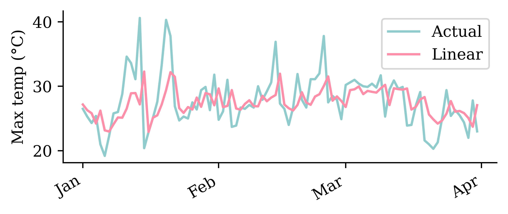
A feedforward network
Same architecture for both; only the input rescaling differs: temperatures are divided by 40 (their rough maximum), log returns by their training-set standard deviation (finance_scale ≈ 0.014).
scale = 1 / finance_scale # for weather: 1/40
model = Sequential([Rescaling(scale), Dense(32, activation="leaky_relu"), Dense(1)])
model.compile(optimizer="adam", loss="mean_absolute_error")
model.fit(X_train_cba, y_train_cba, validation_data=(X_val_cba, y_val_cba), epochs=500,
callbacks=[EarlyStopping(patience=15, restore_best_weights=True)], verbose=0)CBA log-return forecasts (Q1 of test set)
Code
pd.DataFrame({"Actual": y_test_cba, "FNN": y_pred_cba}, index=y_test_cba.index).loc[f"{cba_test_start}-01":f"{cba_test_start}-03"].plot()
plt.ylabel("Log return"); plt.legend();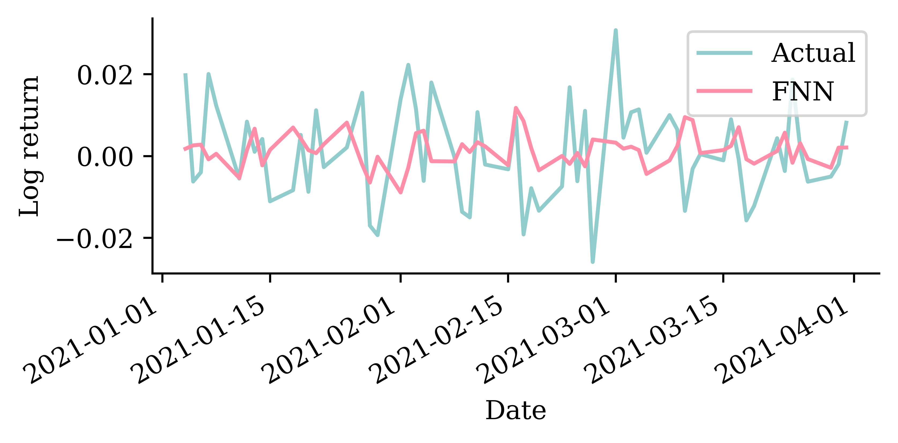
Temperature forecasts (Q1 of test set)
Code
ax = pd.DataFrame({"Actual": y_test_temp, "FNN": y_pred_temp}, index=y_test_temp.index).loc[f"{temp_test_start}-01":f"{temp_test_start}-03"].plot(x_compat=True)
ax.set_ylabel("Max temp (°C)")
ax.xaxis.set_major_locator(mdates.MonthLocator())
ax.xaxis.set_major_formatter(mdates.DateFormatter("%b %Y"))
ax.set_xlabel("")
ax.legend();
Simple Recurrent Neural Networks
Introduction
- A recurrent neural network is a type of neural network that is designed to process sequences of data (e.g. time series, sentences).
- A recurrent neural network is any network that contains a recurrent layer.
- A recurrent layer is a layer that processes data in a sequence.
- An RNN can have one or more recurrent layers.
- Weights are shared over time; this allows the model to be used on arbitrary-length sequences.
On the name of RNNs:
The “recurrent” comes from a recurrence relation: each element of a sequence is defined in terms of the previous one(s). When only the immediately preceding element matters, this looks like
u_n = \psi(n, u_{n-1}) \quad \text{ for } \quad n > 0.
Example: Factorial n! = n (n-1)! for n > 0 given 0! = 1.
Diagram of an RNN cell
The RNN processes each data point in the sequence one by one, while keeping memory of what came before.
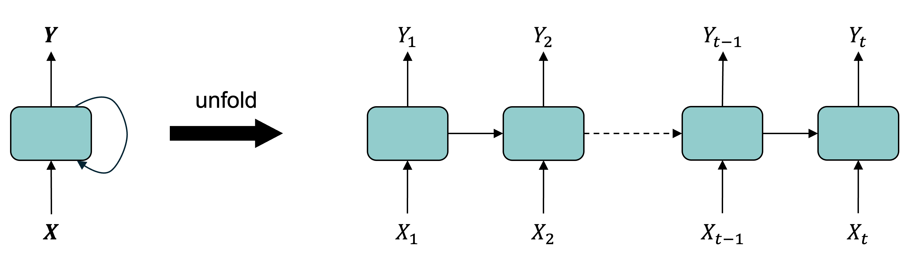
The RNN combines an input X_n with a processed state using inputs X_1,...,X_{n-1} to produce the output Y_n. RNNs have a cyclic information processing structure that enables them to pass information sequentially from previous inputs. RNNs can capture dependencies and patterns in sequential data, making them useful for analysing time series data.
Intuition/demo: Fizz Buzz
Play Fizz Buzz: count up, but say “Fizz” on multiples of 3, “Buzz” on multiples of 5, and “Fizz Buzz” on multiples of both.
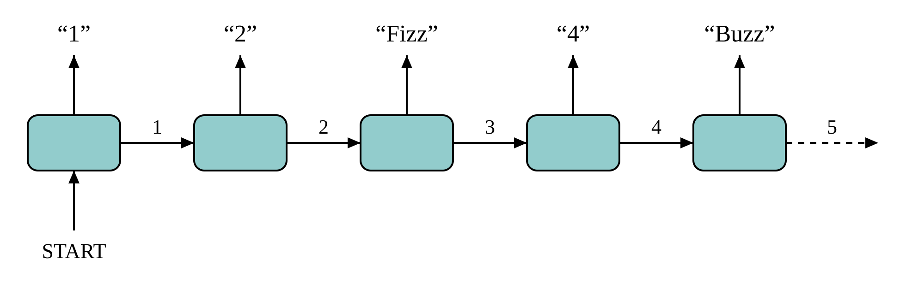
START input, the running count is the hidden state passed to the right, the spoken word is the output at each step.Each player only needs the count from their neighbour (the hidden state) to know what to say and what to pass on — no separate input per step.
A SimpleRNN cell

All the outputs before the final one are often discarded.
The rank of a time series
Say we had n observations of a time series x_1, x_2, \dots, x_n.
This \boldsymbol{x} = (x_1, \dots, x_n) would have shape (n,) & rank 1.
If instead we had a batch of b time series
\boldsymbol{X} = \begin{pmatrix} x_7 & x_8 & \dots & x_{7+n-1} \\ x_2 & x_3 & \dots & x_{2+n-1} \\ \vdots & \vdots & \ddots & \vdots \\ x_3 & x_4 & \dots & x_{3+n-1} \\ \end{pmatrix} \,,
the batch \boldsymbol{X} would have shape (b, n) & rank 2.
| t | x | y |
|---|---|---|
| 0 | x_0 | y_0 |
| 1 | x_1 | y_1 |
| 2 | x_2 | y_2 |
| 3 | x_3 | y_3 |
Say n observations of the m time series would be a shape (n, m) matrix of rank 2.
In Keras, a batch of b of these time series has shape (b, n, m) and has rank 3.
Note
Use \boldsymbol{x}_t \in \mathbb{R}^{1 \times m} to denote the vector of all time series at time t. Here, \boldsymbol{x}_t = (x_t, y_t).
SimpleRNN
Say each prediction is a vector of size d, so \boldsymbol{y}_t \in \mathbb{R}^{1 \times d}.
Then the main equation of a SimpleRNN, given \boldsymbol{y}_0 = \boldsymbol{0}, is
\boldsymbol{y}_t = \psi\bigl( \boldsymbol{x}_t \boldsymbol{W}_x + \boldsymbol{y}_{t-1} \boldsymbol{W}_y + \boldsymbol{b} \bigr) .
Here, \begin{aligned} &\boldsymbol{x}_t \in \mathbb{R}^{1 \times m}, \boldsymbol{W}_x \in \mathbb{R}^{m \times d}, \\ &\boldsymbol{y}_{t-1} \in \mathbb{R}^{1 \times d}, \boldsymbol{W}_y \in \mathbb{R}^{d \times d}, \text{ and } \boldsymbol{b} \in \mathbb{R}^{d}. \end{aligned}
At each time step, a simple Recurrent Neural Network (RNN) takes an input vector x_t, incorporates it with the information from the previous hidden state {y}_{t-1} and produces an output vector at each time step y_t. The hidden state helps the network remember the context of the previous inputs and states, enabling it to make informed predictions about what comes next in the sequence. In a simple RNN, the output at time (t-1) is the same as the hidden state at time t.
SimpleRNN (in batches)
Say we operate on batches of size b, then \boldsymbol{Y}_t \in \mathbb{R}^{b \times d}.
The main equation of a SimpleRNN, given \boldsymbol{Y}_0 = \boldsymbol{0}, is \boldsymbol{Y}_t = \psi\bigl( \boldsymbol{X}_t \boldsymbol{W}_x + \boldsymbol{Y}_{t-1} \boldsymbol{W}_y + \boldsymbol{b} \bigr) . Here, \begin{aligned} &\boldsymbol{X}_t \in \mathbb{R}^{b \times m}, \boldsymbol{W}_x \in \mathbb{R}^{m \times d}, \\ &\boldsymbol{Y}_{t-1} \in \mathbb{R}^{b \times d}, \boldsymbol{W}_y \in \mathbb{R}^{d \times d}, \text{ and } \boldsymbol{b} \in \mathbb{R}^{d}. \end{aligned}
Remember, \boldsymbol{X} \in \mathbb{R}^{b \times n \times m}, \boldsymbol{Y} \in \mathbb{R}^{b \times d}, and \boldsymbol{X}_t is equivalent to X[:, t, :].
Simple Keras demo
- 1
- Defines the number of observations
- 2
- Defines the number of time steps
- 3
- Defines the number of time series
- 4
- Reshapes the array to a rank 3 tensor (4,3,2)
1X[:2]- 1
-
Selects the first two slices along the first dimension. Since the tensor is of dimensions (4,3,2),
X[:2]selects the first two slices (0 and 1) along the first dimension, and returns a sub-tensor of shape (2,3,2).
array([[[ 0., 1.],
[ 2., 3.],
[ 4., 5.]],
[[ 6., 7.],
[ 8., 9.],
[10., 11.]]], dtype=float32)1X[2:]- 1
-
Selects the last two slices along the first dimension. The first dimension (axis=0) has size 4. Therefore,
X[2:]selects the last two slices (2 and 3) along the first dimension, and returns a sub-tensor of shape (2,3,2).
array([[[12., 13.],
[14., 15.],
[16., 17.]],
[[18., 19.],
[20., 21.],
[22., 23.]]], dtype=float32)Keras’ SimpleRNN
As usual, the SimpleRNN is just a layer in Keras.
- 1
- Sets the seed for the random number generator to ensure reproducibility
- 2
- Defines a simple RNN with one output node and sigmoid activation function
- 3
- Specifies binary crossentropy as the loss function (usually used in classification problems), and specifies “accuracy” as the metric to be monitored during training
- 4
-
Trains the model for 500 epochs and saves output as
hist - 5
- Evaluates the model to obtain a value for the loss and accuracy
[8.05906867980957, 0.5]The predicted probabilities on the training set are:
model.predict(X, verbose=0)array([[8.56e-05],
[2.25e-10],
[5.98e-16],
[1.59e-21]], dtype=float32)SimpleRNN weights
To verify the results of predicted probabilities, we can obtain the weights of the fitted model and calculate the outcome manually as follows.
model.get_weights()[array([[-1.47],
[-0.67]], dtype=float32),
array([[0.99]], dtype=float32),
array([-0.14], dtype=float32)]def sigmoid(x):
return 1 / (1 + np.exp(-x))
W_x, W_y, b = model.get_weights()
Y = np.zeros((num_obs, output_size), dtype=np.float32)
for t in range(num_time_steps):
X_t = X[:, t, :]
z = X_t @ W_x + Y @ W_y + b
Y = sigmoid(z)
Yarray([[8.56e-05],
[2.25e-10],
[5.98e-16],
[1.59e-21]], dtype=float32)Recurrent Neural Networks
Long short-term memory (LSTM)
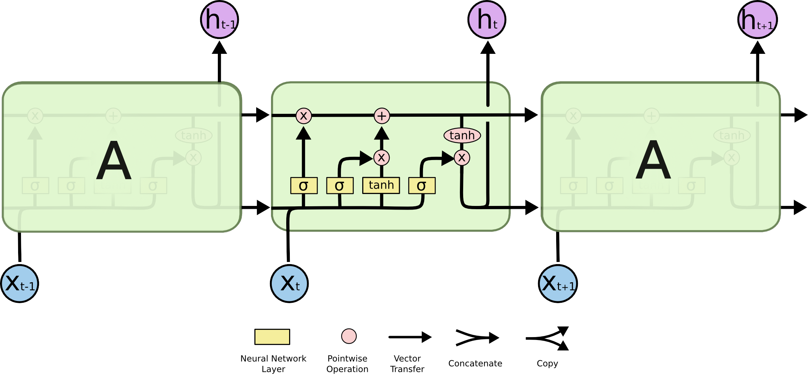
Simple RNN structures encounter vanishing gradient problems, hence, struggle with learning long term dependencies. LSTM models were designed to overcome this problem. LSTMs have a more complex network structure (contains more memory cells and gating mechanisms) and can better regulate the information flow.
Gated Recurrent Unit (GRU)
GRUs are simpler compared to LSTM, hence, computationally more efficient than LSTMs.

Recurrent layers can be stacked
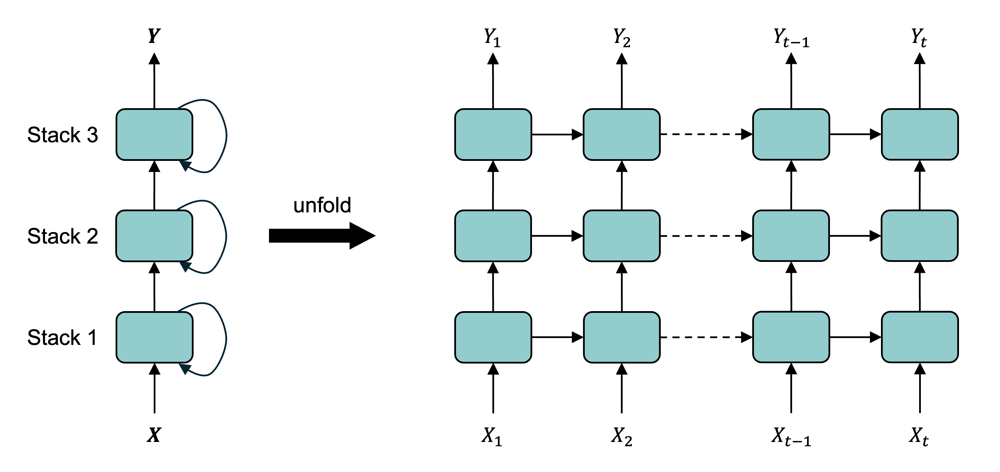
The output from a hidden state can be used as input for another hidden layer of RNN processing. This is called stacking, or a stacked RNN.
Fitting the SimpleRNN
scale = 1 / finance_scale # for weather: 1/40
model = Sequential([Rescaling(scale), Reshape((-1, 1)), SimpleRNN(64, activation="tanh"), Dense(1)])
model.compile(optimizer="adam", loss="mean_absolute_error")
model.fit(X_train_cba, y_train_cba, validation_data=(X_val_cba, y_val_cba), epochs=500,
callbacks=[EarlyStopping(patience=15, restore_best_weights=True)], verbose=0)CBA stock price forecasts (test set)
Code
pd.DataFrame({"Actual": y_test_cba, "SimpleRNN": y_pred_cba}, index=y_test_cba.index).plot()
plt.ylabel("Log return"); plt.legend();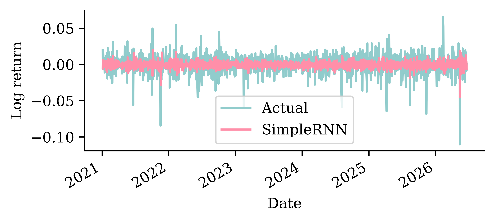
Temperature forecasts (test set)
Code
ax = pd.DataFrame({"Actual": y_test_temp, "SimpleRNN": y_pred_temp}, index=y_test_temp.index).loc[f"{temp_test_start}-01":f"{temp_test_start}-03"].plot(x_compat=True)
ax.set_ylabel("Max temp (°C)")
ax.xaxis.set_major_locator(mdates.MonthLocator())
ax.xaxis.set_major_formatter(mdates.DateFormatter("%b %Y"))
ax.set_xlabel("")
ax.legend();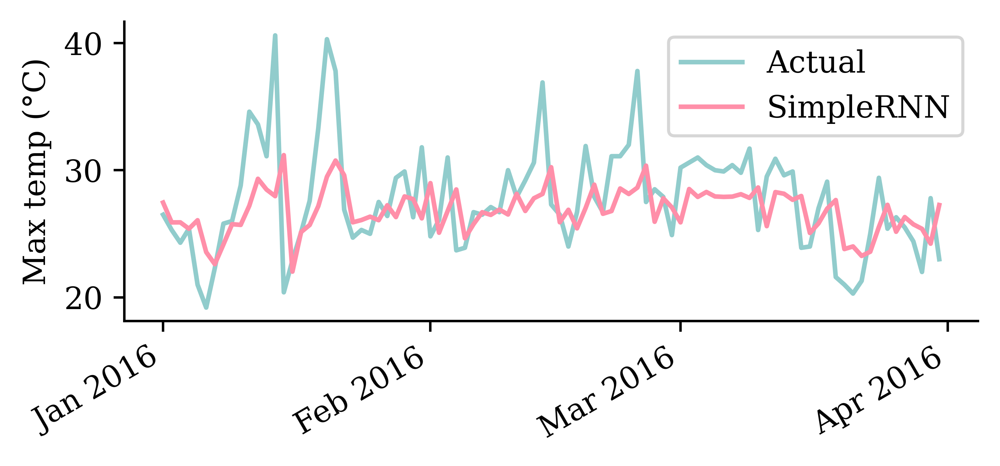
Fitting a GRU
scale = 1 / finance_scale # for weather: 1/40
model = Sequential([Rescaling(scale), Reshape((-1, 1)), GRU(16, activation="tanh"), Dense(1)])
model.compile(optimizer="adam", loss="mean_absolute_error")
model.fit(X_train_cba, y_train_cba, validation_data=(X_val_cba, y_val_cba), epochs=500,
callbacks=[EarlyStopping(patience=15, restore_best_weights=True)], verbose=0)CBA stock price forecasts (test set)
Code
pd.DataFrame({"Actual": y_test_cba, "GRU": y_pred_cba}, index=y_test_cba.index).plot()
plt.ylabel("Log return"); plt.legend();
Temperature forecasts (test set)
Code
ax = pd.DataFrame({"Actual": y_test_temp, "GRU": y_pred_temp}, index=y_test_temp.index).loc[f"{temp_test_start}-01":f"{temp_test_start}-03"].plot(x_compat=True)
ax.set_ylabel("Max temp (°C)")
ax.xaxis.set_major_locator(mdates.MonthLocator())
ax.xaxis.set_major_formatter(mdates.DateFormatter("%b %Y"))
ax.set_xlabel("")
ax.legend();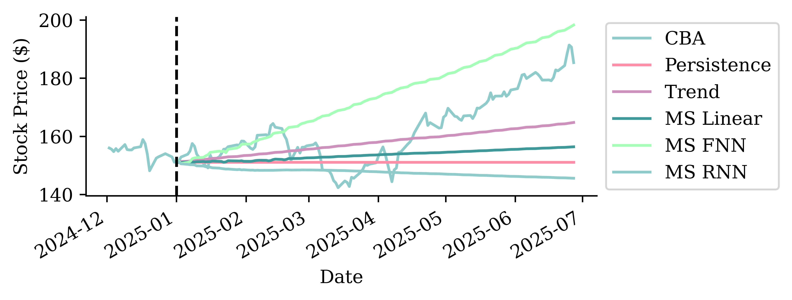
Metrics on the validation set
Stock price forecasting
| RMSE ($) | |
|---|---|
| FNN | 0.81 |
| SimpleRNN | 0.80 |
| GRU | 0.78 |
| Linear | 0.77 |
| Persistence (1-step) | 0.77 |
Temperature forecasting
| RMSE (°C) | |
|---|---|
| Persistence (1-step) | 4.07 |
| Seasonal | 3.85 |
| Linear | 3.46 |
| SimpleRNN | 3.43 |
| FNN | 3.40 |
| GRU | 3.38 |
Metrics on the test set
Stock price forecasting
| RMSE ($) | |
|---|---|
| Persistence (1-step) | 1.63 |
Temperature forecasting
| RMSE (°C) | |
|---|---|
| GRU | 3.48 |
For the weather, every learned model beats the baselines and the GRU is best. For the share price, nothing meaningfully beats persistence — there is no signal to extract.
Multi-step forecasting and multivariate forecasting
Autoregressive forecasts
Every model so far is one-step: it maps the last 40 days to a single next value. To forecast further out, we can feed the model its own predictions.
Idea: make the first forecast, then treat it as if it were real and use it to make the next forecast, and so on. For the linear model this reads:
\begin{aligned} \hat{y}_t &= \beta_0 + \beta_1 y_{t-1} + \beta_2 y_{t-2} + \ldots + \beta_n y_{t-n} \\ \hat{y}_{t+1} &= \beta_0 + \beta_1 \hat{y}_t + \beta_2 y_{t-1} + \ldots + \beta_n y_{t-n+1} \\ \hat{y}_{t+2} &= \beta_0 + \beta_1 \hat{y}_{t+1} + \beta_2 \hat{y}_t + \ldots + \beta_n y_{t-n+2} \end{aligned} \vdots \hat{y}_{t+k} = \beta_0 + \beta_1 \hat{y}_{t+k-1} + \beta_2 \hat{y}_{t+k-2} + \ldots + \beta_n \hat{y}_{t+k-n}
After n steps the window holds only predictions — the model is running entirely on its own output. The same recursion works for any one-step model.
Autoregressive forecasting function
Each step predicts one value, appends it to the window, and drops the oldest input — so the 40-day window slides forward one day at a time.
def autoregressive_forecast(model, window, n_steps):
"""Roll a one-step model forward, feeding each prediction back in."""
window = np.asarray(window, dtype="float32").copy()
preds = []
for _ in range(n_steps):
next_value = model.predict(window.reshape(1, -1), verbose=0).flatten()[0]
preds.append(next_value)
window = np.append(window[1:], next_value) # drop oldest, add prediction
return np.array(preds)Forecasting a few weeks ahead
Start the model with the last 40 real days, then forecast the next four weeks. Over a short horizon the errors may be small enough.
Code
horizon = 28
seed = X_test_temp.iloc[0].to_numpy()
short = pd.Series(autoregressive_forecast(fnn_w, seed, horizon),
index=y_test_temp.index[:horizon])
y_test_temp.iloc[:horizon].plot(label="Actual", marker=".", x_compat=True)
short.plot(label="Recursive FNN", marker=".", color="#CC91BC", x_compat=True)
plt.ylabel("Max temp (°C)")
ax = plt.gca()
ax.xaxis.set_major_locator(mdates.DayLocator(interval=7))
ax.xaxis.set_major_formatter(mdates.DateFormatter("%b %d"))
plt.xlabel("")
plt.legend(loc="center left", bbox_to_anchor=(1, 0.5));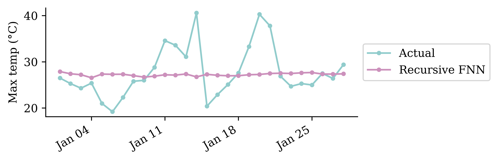
Forecasting a year ahead
Keep unrolling for the whole test period and the small errors compound. The forecast drifts off, loses the seasonal cycle, and settles on a flat plateau, much worse than the trivial baseline.
Code
long = pd.Series(autoregressive_forecast(fnn_w, X_test_temp.iloc[0].to_numpy(), len(y_test_temp)),
index=y_test_temp.index)
y_test_temp.plot(label="Actual")
seasonal.reindex(y_test_temp.index).plot(label="Seasonal baseline")
long.plot(label="Recursive FNN", color="#CC91BC")
plt.ylabel("Max temp (°C)")
plt.legend(loc="center left", bbox_to_anchor=(1, 0.5));
Multivariate forecast model
Every model so far ended in Dense(1) — it predicted a single number/time series.
Often we want to forecast several related series at once — e.g. the big-four banks, or house-price indices across multiple cities.
An RNN does this with almost no change: feed it a multivariate sequence and widen the output head so it predicts a vector.
One series out — scalar target.
model = Sequential([
Input((seq_len, num_series)),
GRU(16),
Dense(1),
])Many series out — vector target.
model = Sequential([
Input((seq_len, num_series)),
GRU(16),
Dense(num_series),
])- The input shape
(seq_len, num_series)is the same — the RNN reads all the series at each step. - Only the final
Denselayer changes from1tonum_series, and the loss is averaged over all outputs — so the model can exploit correlations across series.
A multivariate example
Code
fig, axs = plt.subplots(2, 2, figsize=(5.5, 3.5), sharex=True)
for ax, s in zip(axs.flat, station_files):
actual_mt[s].loc[f"{temp_test_start}-01":f"{temp_test_start}-03"].plot(ax=ax, label="Actual", x_compat=True)
pred_mt[s].loc[f"{temp_test_start}-01":f"{temp_test_start}-03"].plot(ax=ax, label="GRU", x_compat=True)
ax.set_title(s, fontsize=9); ax.set_ylabel("Max temp (°C)"); ax.set_xlabel("")
axs[0, 0].legend(fontsize=7)
for ax in [axs[1, 0], axs[1, 1]]:
ax.xaxis.set_major_locator(mdates.MonthLocator())
ax.xaxis.set_major_formatter(mdates.DateFormatter("%b %Y"))
plt.tight_layout();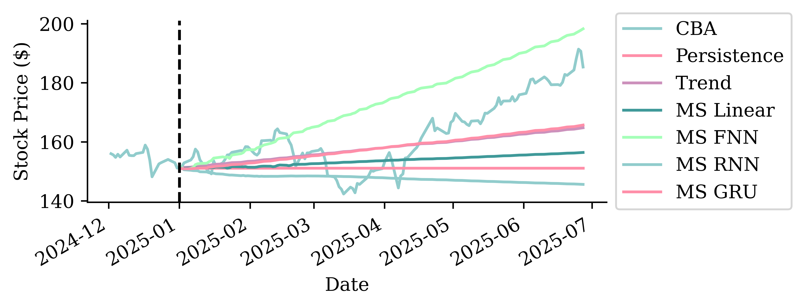
The same single model serves all four Sydney-region stations at once — the only change from the single-station case is the wider output head.
Car Crash NLP with RNNs
Predict injury severity from crash reports
We revisit the NHTSA car crash dataset from the NLP lecture: free-text police reports (SUMMARY_EN) with a binary injury-severity target (INJSEVB). This time we feed the text to recurrent networks.
features = df["SUMMARY_EN"]
target = LabelEncoder().fit_transform(df["INJSEVB"])
X_main, X_test, y_main, y_test = train_test_split(features, target, test_size=0.2, random_state=1)
X_train, X_val, y_train, y_val = train_test_split(X_main, y_main, test_size=0.25, random_state=1)
X_train.shape, X_val.shape, X_test.shape((4169,), (1390,), (1390,))Keep text as sequence of tokens
max_length = 500
max_tokens = 1_000
# Build vocabulary using CountVectorizer
count_vect = CountVectorizer(max_features=max_tokens-2, lowercase=True,
token_pattern=r"(?u)\b\w+\b")
count_vect.fit(X_train)
vocab = ["", "[UNK]"] + list(count_vect.get_feature_names_out()) # 0 = padding, 1 = unknown
word_to_idx = {word: idx for idx, word in enumerate(vocab)}Note: on the TensorFlow backend, you could just use a keras.layers.TextVectorization layer, which builds the vocabulary, tokenises, and pads (using 0 for padding and 1 for the unknown token) automatically.
Tokenise
def texts_to_sequences(texts, word_to_idx, max_length):
sequences = []
for text in texts:
tokens = re.findall(r"(?u)\b\w+\b", text.lower())
seq = [word_to_idx.get(t, 1) for t in tokens][:max_length] # unknown words -> 1
seq = seq + [0] * (max_length - len(seq)) # pad with zeros
sequences.append(seq)
return np.array(sequences)
X_train_txt = texts_to_sequences(X_train, word_to_idx, max_length)
X_val_txt = texts_to_sequences(X_val, word_to_idx, max_length)
X_test_txt = texts_to_sequences(X_test, word_to_idx, max_length)
print(vocab[:5], vocab[len(vocab)//2:(len(vocab)//2 + 5)], vocab[-5:])['', '[UNK]', '0', '1', '10'] ['is', 'it', 'its', 'jeep', 'jersey'] ['year', 'years', 'yellow', 'yield', 'zone']The input data is a sequence of integers
X_train_txt[0]array([880, 249, 619, 469, 870, 319, 97, 620, 78, 963, 469, 870, 568,
620, 78, 392, 958, 849, 493, 870, 493, 224, 620, 78, 605, 818,
62, 513, 924, 514, 317, 284, 191, 919, 513, 741, 491, 178, 109,
320, 969, 62, 513, 924, 514, 317, 284, 191, 919, 513, 741, 235,
178, 78, 691, 1, 900, 788, 870, 161, 605, 818, 741, 957, 313,
110, 843, 984, 78, 807, 672, 809, 870, 675, 823, 957, 65, 507,
49, 587, 870, 900, 382, 957, 604, 110, 874, 968, 601, 94, 135,
219, 134, 870, 885, 620, 870, 249, 943, 78, 18, 179, 1, 1,
957, 840, 134, 870, 493, 355, 818, 469, 513, 883, 954, 387, 870,
788, 889, 193, 815, 501, 244, 919, 521, 944, 78, 25, 297, 1,
957, 606, 469, 513, 924, 119, 870, 759, 493, 976, 501, 486, 889,
411, 843, 975, 870, 529, 920, 420, 943, 154, 502, 521, 126, 943,
231, 870, 919, 502, 306, 761, 78, 667, 949, 984, 1, 531, 1,
119, 870, 493, 397, 870, 320, 943, 840, 469, 870, 568, 620, 870,
493, 469, 1, 889, 870, 119, 667, 949, 944, 334, 870, 493, 110,
848, 870, 398, 620, 943, 984, 502, 398, 521, 239, 166, 950, 180,
889, 377, 728, 469, 870, 493, 110, 968, 166, 896, 314, 889, 262,
870, 306, 620, 943, 78, 1, 995, 624, 554, 205, 889, 150, 469,
413, 435, 1, 863, 678, 563, 387, 281, 441, 165, 682, 110, 1,
431, 957, 626, 446, 958, 889, 661, 935, 1, 134, 870, 885, 620,
870, 249, 431, 830, 869, 975, 870, 529, 194, 431, 422, 332, 1,
889, 216, 446, 919, 177, 840, 609, 1, 968, 889, 411, 975, 431,
761, 870, 667, 182, 117, 431, 868, 761, 944, 333, 870, 493, 110,
431, 1, 387, 465, 431, 957, 609, 481, 469, 870, 249, 870, 250,
677, 342, 387, 943, 957, 210, 880, 949, 907, 639, 870, 513, 533,
521, 781, 620, 905, 513, 870, 250, 712, 957, 210, 126, 78, 306,
718, 337, 1, 633, 1, 870, 130, 358, 210, 889, 943, 473, 109,
1, 339, 88, 431, 778, 429, 1, 870, 493, 110, 609, 840, 126,
966, 126, 870, 119, 667, 949, 1, 870, 900, 1, 870, 306, 620,
944, 78, 52, 995, 624, 554, 469, 413, 435, 957, 960, 446, 243,
525, 387, 78, 588, 218, 134, 870, 885, 620, 870, 249, 431, 957,
626, 446, 958, 449, 397, 989, 975, 870, 249, 619, 431, 830, 431,
957, 606, 469, 513, 23, 126, 870, 900, 529, 920, 420, 431, 610,
870, 949, 469, 870, 521, 355, 818, 422, 1, 889, 919, 521, 110,
206, 870, 493, 431, 1, 126, 870, 949, 828, 502, 919, 110, 839,
469, 870, 568, 620, 870, 493, 431, 169, 177, 244, 609, 143, 943,
431, 630, 761, 870, 667, 949, 984, 502, 531, 110, 1, 626, 96,
431, 334, 870, 493, 431, 856, 571, 482, 110, 957, 412, 889, 150,
195, 638, 134, 78, 518, 1])Feed LSTM a sequence of one-hots
random.seed(42)
one_hot_model = Sequential([Input(shape=(max_length,), dtype="int64"),
# A frozen identity-matrix embedding maps each token id to its one-hot vector,
# while mask_zero lets the LSTM skip the padding (0) positions.
Embedding(max_tokens, max_tokens, embeddings_initializer="identity",
trainable=False, mask_zero=True),
Bidirectional(LSTM(24)),
Dense(1, activation="sigmoid")])
one_hot_model.compile(optimizer="adam",
loss="binary_crossentropy", metrics=["accuracy"])
one_hot_model.summary()Model: "sequential_1"
┏━━━━━━━━━━━━━━━━━━━━━━━━━━━━━━━━━┳━━━━━━━━━━━━━━━━━━━━━━━━┳━━━━━━━━━━━━━━━┓ ┃ Layer (type) ┃ Output Shape ┃ Param # ┃ ┡━━━━━━━━━━━━━━━━━━━━━━━━━━━━━━━━━╇━━━━━━━━━━━━━━━━━━━━━━━━╇━━━━━━━━━━━━━━━┩ │ embedding (Embedding) │ (None, 500, 1000) │ 1,000,000 │ ├─────────────────────────────────┼────────────────────────┼───────────────┤ │ bidirectional (Bidirectional) │ (None, 48) │ 196,800 │ ├─────────────────────────────────┼────────────────────────┼───────────────┤ │ dense (Dense) │ (None, 1) │ 49 │ └─────────────────────────────────┴────────────────────────┴───────────────┘
Total params: 1,196,849 (4.57 MB)
Trainable params: 196,849 (768.94 KB)
Non-trainable params: 1,000,000 (3.81 MB)
Fit & evaluate
es = keras.callbacks.EarlyStopping(patience=10, restore_best_weights=True,
monitor="val_accuracy", verbose=2)
one_hot_model.fit(X_train_txt, y_train, epochs=1_000, callbacks=[es],
validation_data=(X_val_txt, y_val), verbose=0);one_hot_model.evaluate(X_train_txt, y_train, verbose=0, batch_size=1_000)[0.28218403458595276, 0.8889421820640564]one_hot_model.evaluate(X_val_txt, y_val, verbose=0, batch_size=1_000)[0.5348300933837891, 0.7482014298439026]Custom embeddings
embed_lstm = Sequential([Input(shape=(max_length,), dtype="int64"),
# mask_zero masks only padding (0); the unknown token (1) keeps its own
# learnable embedding, so "a rare word appeared here" stays a usable signal.
Embedding(input_dim=max_tokens, output_dim=32, mask_zero=True),
Bidirectional(LSTM(24)),
Dense(1, activation="sigmoid")])
embed_lstm.compile("adam", "binary_crossentropy", metrics=["accuracy"])
embed_lstm.summary()Model: "sequential_2"
┏━━━━━━━━━━━━━━━━━━━━━━━━━━━━━━━━━┳━━━━━━━━━━━━━━━━━━━━━━━━┳━━━━━━━━━━━━━━━┓ ┃ Layer (type) ┃ Output Shape ┃ Param # ┃ ┡━━━━━━━━━━━━━━━━━━━━━━━━━━━━━━━━━╇━━━━━━━━━━━━━━━━━━━━━━━━╇━━━━━━━━━━━━━━━┩ │ embedding_1 (Embedding) │ (None, 500, 32) │ 32,000 │ ├─────────────────────────────────┼────────────────────────┼───────────────┤ │ bidirectional_1 (Bidirectional) │ (None, 48) │ 10,944 │ ├─────────────────────────────────┼────────────────────────┼───────────────┤ │ dense_1 (Dense) │ (None, 1) │ 49 │ └─────────────────────────────────┴────────────────────────┴───────────────┘
Total params: 42,993 (167.94 KB)
Trainable params: 42,993 (167.94 KB)
Non-trainable params: 0 (0.00 B)
Fit & evaluate
es = keras.callbacks.EarlyStopping(patience=10, restore_best_weights=True,
monitor="val_accuracy", verbose=2)
embed_lstm.fit(X_train_txt, y_train, epochs=1_000, callbacks=[es],
validation_data=(X_val_txt, y_val), verbose=0);embed_lstm.evaluate(X_train_txt, y_train, verbose=0, batch_size=1_000)[0.26525813341140747, 0.8980571031570435]embed_lstm.evaluate(X_val_txt, y_val, verbose=0, batch_size=1_000)[0.2798532247543335, 0.9064748287200928]embed_lstm.evaluate(X_test_txt, y_test, verbose=0, batch_size=1_000)[0.27986499667167664, 0.9136690497398376]References
Benidis, K., Rangapuram, S. S., Flunkert, V., Wang, Y., Maddix, D., Turkmen, C., Gasthaus, J., Bohlke-Schneider, M., Salinas, D., Stella, L., et al. (2022). Deep learning for time series forecasting: Tutorial and literature survey. ACM Computing Surveys, 55(6), 1–36.
Hochreiter, S., & Schmidhuber, J. (1997). Long short-term memory. Neural Computation, 9(8), 1735–1780.
Richman, R., & Wuthrich, M. V. (2019). Lee and Carter go machine learning: Recurrent neural networks. Available at SSRN 3441030.
Package Versions
from watermark import watermark
print(watermark(python=True, packages="keras,matplotlib,numpy,pandas,seaborn,scipy,torch"))Python implementation: CPython
Python version : 3.14.5
IPython version : 9.13.0
keras : 3.14.1
matplotlib: 3.10.9
numpy : 2.4.4
pandas : 3.0.2
seaborn : 0.13.2
scipy : 1.17.1
torch : 2.11.0
Glossary
- autoregressive forecasting
- forecasting
- GRU
- LSTM
- one-step/multi-step ahead forecasting
- persistence forecast
- recurrent neural networks
- SimpleRNN